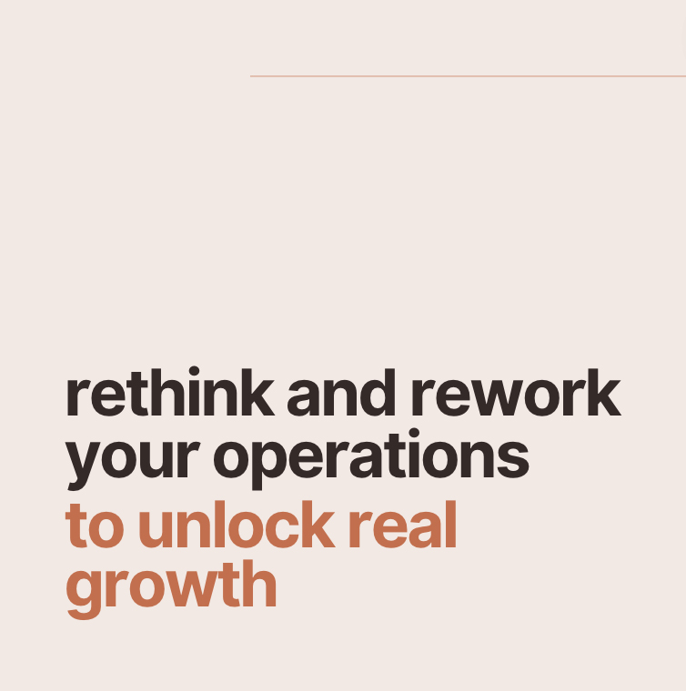

Doubling the size of your speech therapy private practice? Tough.
Tripling it? Surprisingly, easier.
Doubling? You're on track. Driven. Growing steadily. But maybe hitting a plateau or stuck in a local maxima.
Tripling? You're ready and open to think big. It's time for radical shifts.
- Invest in cutting-edge tech.
- Revamp your scheduling.
- Recruit, train, and retain.
- Offer more than just therapy roles. Create leadership positions.
- Beyond organic growth? M&A is on the table.
- Embrace teletherapy. Expand your reach.
- Dive into content marketing. Position yourself as an industry leader.
- Collaborate. Form partnerships.
- Understand client needs. Tailor your offerings.
Aim high. Innovate.